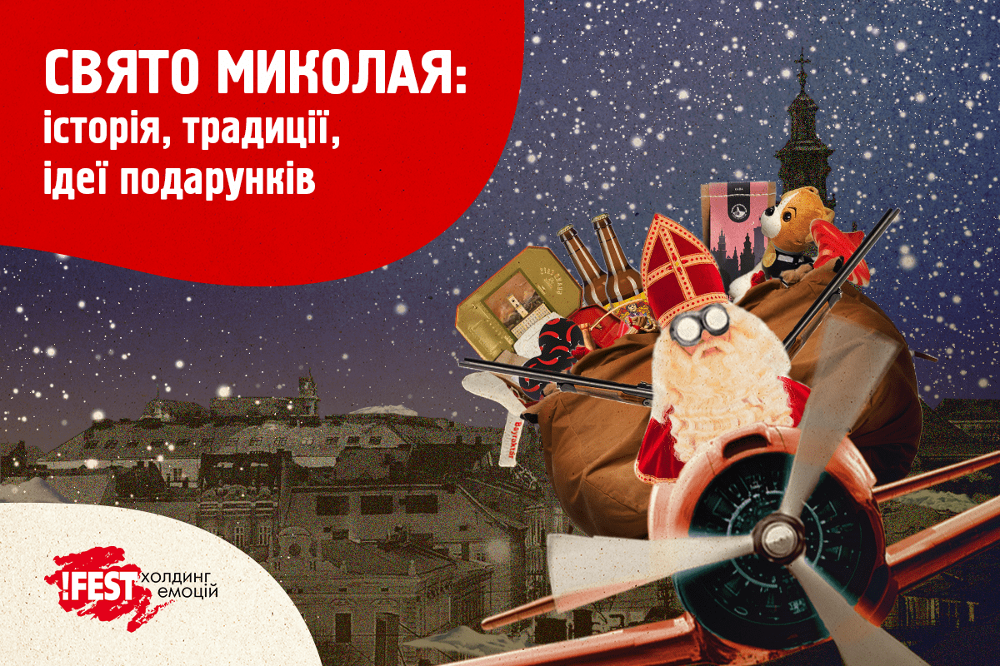
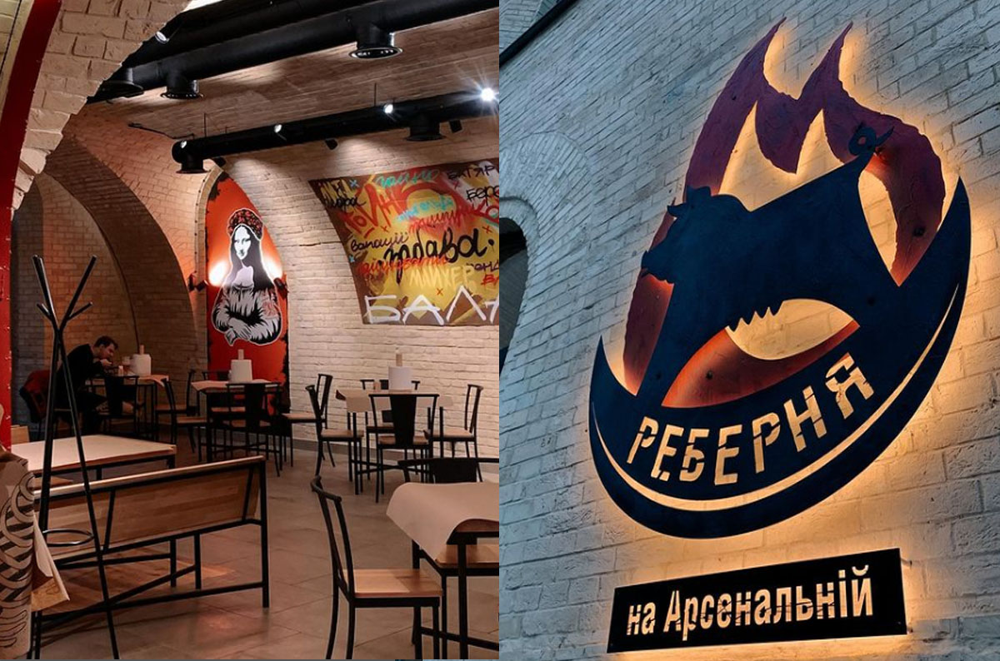
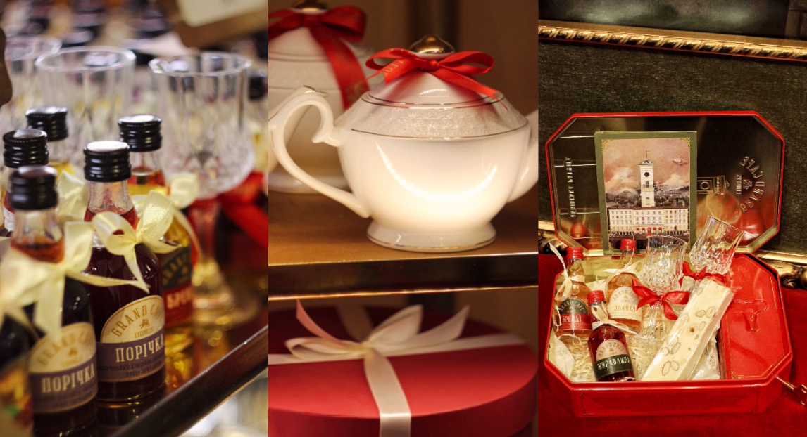

Дня святого Миколая з нетерпінням чекають і діти, і дорослі. Воно наповнене різдвяною атмосферою та сімейним затишком. У статті розповідаємо про історію свята, забуті й нові традиції та додаємо список крамничок, де можна знайти подарунки для рідних!
Маєш нагоду виграти подарунковий бокс від наших кнайп. Ходи в Instagram, щоб дізнатись деталі!
Хто такий святий Миколай?
Перше, що тобі треба пам’ятати — Святий Миколай не персонаж із казки, а реальна людина. Спершу він став священиком, а потім — єпископом. Його ім’я означає «переможець народний», іншими мовами — Ніколас, Ніклас, Клаус, Мікулаш, Міклос, Ніхол тощо. Так, Святий Миколай і Санта Клаус — одна й та ж персона =) За легендою, коли батьки Миколая померли, він отримав величезний спадок, але не став розкошувати, а роздавав статки бідним і знедоленим. Саме тому його так шанують, і українці в тому числі.
Миколай в Україні
Миколая — не таке стародавнє свято, як, наприклад, Андрія чи Різдво. У народному уявленні Миколай — найбільший «патрон» на землі: він рятує потопаючих, допомагає сиротам і вдовам, береже від розбійників і вовків.
Варити пиво на Миколая
Українська традиція пам’ятає Миколая як веселе народне свято. Колись у цей день господарі варили пиво, скликали гостей: пили, гуляли, веселились. А по обіді, уже напідпитку, запрягали найкращих коней і з піснями їздили навколо села. Варити пиво на «Миколая» — звичай дуже старий.
А як щодо подарунків?
На відміну від варіння пива (про це мало хто пам’ятає), у цей день закріпився звичай дарувати дітям подарунки. За Святим Миколаєм лишалося право карати чи провчати дітей за непослух. Тому чемним він дарував солодощі та потрібні для навчання речі, а нечемним клав різочку під подушку.
Нині, незадовго до свята, діти пишуть листи до Святого Миколая, де перераховують всі свої побажання. Виконання бажання залежить від поведінки дитини протягом року. Звичайно, всі діти отримують подарунки, але це додатковий стимул слухати батьків і робити гарні вчинки. Не стають виключенням і дорослі, які теж із задоволенням обмінюються презентами =)
Крамнички у Львові та по Україні
Львівська майстерня шоколаду має цілу зимову колекцію шоколадник дарунків. А ще ми вперше запустили адвент-календар із солодкими радощами, які дарують щастя щодня. Щоб придбати, заходь у найближчу Майстерню або замовляй в інтернет-крамниці.
У П’яній вишні зібрали для тебе подарунковий бокс, в який входить: келих, настоянка, вишневе драже, шкарпетки, горішки (мигдаль зі смаком пармезану), патріотичний стікерпак. Або просто даруй рідним пляшку ліпшої львівської настоянки. Шукай у найближчому закладі або замовляй на сторінці в Instagram.
У Реберні є багато файних речей у крамничці: від фірмового пива, настоянки, соусів, патріотичних футболок, шкарпеток чи худі до дитячих книг та сокир. З пустими руками точно не підеш. Заходь у Реберню у своєму місті.
З Видавництвом Старого Лева приємно побути книжковим Миколаєм і потішити друзів та рідних — тих, хто завжди поряд, і тих, хто хоч і далеко, але завжди в серці. Шукай книгарню у своєму місті або ж замовляй в інтернет-крамниці.
Крамнички у Львові
Різні види пива, шкарпетки, відкривачки, стікери, келихи, книгу «Смак Пива» і навіть каву можеш знайти у подарункових коробках Театру пива та пивоварні «Правда». Заходь за подарунками на пл. Ринок, 32 або обирай пакунок на сайті, а ми швиденько все доставимо!
У Grand Cafe Leopolis можеш сформувати або обрати готовий подарунковий набір із солодощами, чаєм та вишуканими чашками з заварником, кавою та горнятками, просекко з бокалами. Ти краще знаєш, що твої люблять! Заходь на пл. Ринок, 1.
Подарунки для нечемних дорослих теж можуть бути класними, якщо вони з Мазоха. Шкіряні аксесуари, наручники, флогери, свічки, косметика, солодощі та інші пікантні дрібнички. Заходь та обирай. Усі презенти ти можеш придбати на вул. Сербській, 7 або ж в інтернет-крамничці.
Наш алхімік має багато краму та зберігає його у 10 різних куточках Галицької алхімії. Кожен з них особливий, а сувеніри (торбинки, багато косметики для тіла і ванни, футболки, шкарпетки тощо) наділені особливою магією. Приходь обирати на вул. Вірменській, 20.
У Криївці знайдеш патріотичні речі, які піднімають бойовий дух — значки, футболки, худі, шеврони і навіть кава тут міцна, наче перемога, та гірка, як поразка ворога.
Кава, все для кави та трішки більше є у Львівській копальні кави: кава, турки, френч преси, гейзерки, млинки, косметика, горнятка, еко сумки та інші цікаві презенти. Заходь на пл. Ринок, 10 та обирай товари на подарунок. Як немає можливості приїхати чи зайти — ну то не біда, можеш замовити найсмачнішу каву і все, що треба в інтернет-крамниці.
На сайті !FEST доставки ми також підготували святкові пакунки. Туди поклали трохи кави, багато різних смаколиків та можливість виграти квитки на концерт гурту Антитіла 25.12.2022 (деталі у соцмережах !FEST Доставки). Ну і ще по секрету — кількість обмежена та лише по передзамовленню до 18.12.2022 до 13:00.
У «Telesyk Airlines» маємо презенти і для дітлахів, і для тих, хто себе ними відчуває. Провести час тут можна не тільки обравши забавку чи настільну гру до смаку, а й весело і пізнавально. Чекаємо на вул. Шевській, 1.